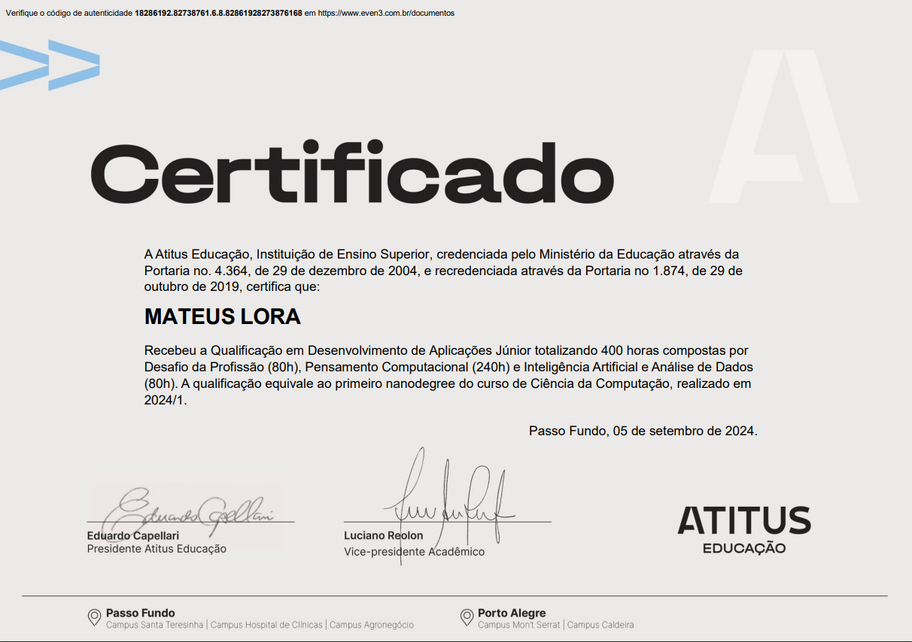
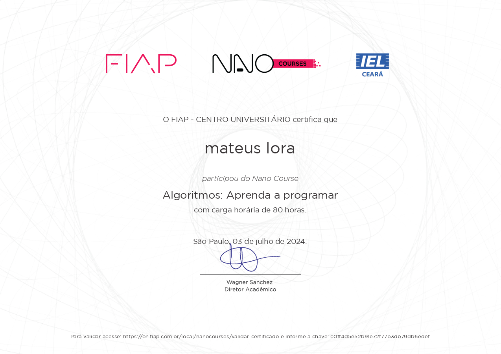
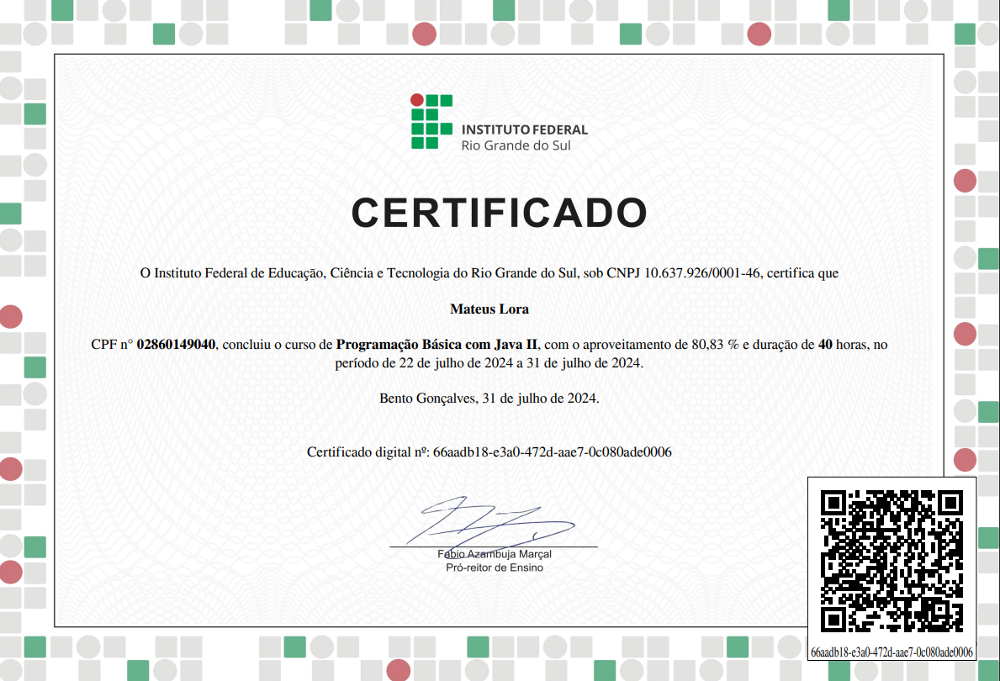

Portfólio Pessoal
Sobre Mim
Olá, me chamo Mateus, tenho 19 anos, sou de Itapuca/RS e estou cursando o segundo nível de Ciência da Computação. Sou profundamente interessado em Desenvolvimento de Software e Cyber Segurança. Desde criança, a tecnologia sempre me fascinou, e minha curiosidade em entender como as coisas funcionam foi o que me levou a escolher o curso.
Estou focado em expandir meus conhecimentos por meio de projetos práticos e desafios constantes. Sou uma pessoa dedicada e determinada, que acredita no aprendizado contínuo como essencial para o sucesso na área de tecnologia. Por isso, estou sempre buscando me atualizar com as últimas tendências e inovações.
Formação
Atualmente, estou cursando a graduação em Ciência da Computação na Atitus Educação, onde estou desenvolvendo uma base sólida em sistemas e tecnologias. O curso, estruturado em nanodegrees, já me proporcionou a certificação em "Desenvolvimento de Aplicações Júnior" ao concluir o primeiro nível.
Skills
Entre minhas habilidades, destaco o conhecimento em Python, que foi a primeira linguagem com a qual tive contato. Atualmente, estou trabalhando com HTML, CSS e JavaScript, além de Java, com a qual já possuía certa familiaridade. Também considero importante mencionar meu conhecimento em Git para realizar o controle de versões.

Certificações
Abaixo estão algumas das certificações que obtive até o momento.
  